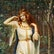

MITHOPÉDIA
MITHOPÉDIA Skandináv Istenségek
Freya
Freya az áldás, a szerelem és a termékenység lenyűgözően szép északi istennője volt. A jóslásban való jártasságáról ismert Vanir törzs tagja volt, aki egyszerre tudott szelíd uralkodó és ádáz harcos lenni.
Melyik napot nevezték el Freyáról?
Az angol nyelvben a hét számos napja az északi mitológiából ered, és a pénteket általában a "Freya napja" szóösszetételének tartják.
Mi volt Freya legnagyobb kincse?
Freya egy gyönyörű arany nyakláncot birtokolt, amelyet Brisingamen néven ismertek, és amelyért híres módon négy törpe mesterembertől alkudozott.
Ki volt Freya felesége?
Freya a titokzatos Odr istenhez ment feleségül, aki valószínűleg Odin alternatív neve volt, és akitől két lánya született, Hnoss és Gersemi.
Az északi panteon egyik fő istensége, a bájos és elbűvölő Freya az áldás, a szerelem, a vágy és a termékenység istennője volt. Freya a Vanir istenségek törzsének tagja volt, és osztozott népének a jóslás mágikus művészete iránti vonzalmában. Freya volt az, aki megismertette az istenekkel a seidr-t, a mágia egy olyan formáját, amely lehetővé tette a mágia gyakorlóinak, hogy megismerjék és megváltoztassák a jövőt.
Freya szelídebb és szimpatikusabb volt, mint a többi északi istenség. Míg Thor agresszióval érte el céljait, Odin és Loki pedig cselhez folyamodott, Freya az ajándékok, a szépség és a szex szelídebb meggyőzésével érte el céljait. Bár Freya gyakran önzetlen és segítőkész volt, volt egy sötétebb oldala is. A férfi istenekhez hasonlóan Freya is szerette a vért, és a csatákban vadul harcolt. Azt mondták, hogy a harcban megölt harcosok felének életét ő oltotta ki.
Freyát számos melléknévvel illették, és nevének változatai éppoly különbözőek voltak, mint számos tisztelőjének germán nyelve és dialektusa. Részben ezeknek a nyelvi különbségeknek köszönhetően az északi mitológia egyes értelmezései úgy vélték, hogy Freya szinonimája Friggnek, Odin feleségének, és néha Gullveignek, a Völuspá völva elbeszélőjének, aki elmesélte az Aesir-Vanir háborút és megjósolta az istenek sorsát a Ragnarök idején.
Etimológia
A Freya név (ó-norvégül Freyja) jelentése "a hölgy", és az ógermán frawjon szóból származik, amely egy magas társadalmi rangú, érett nő tiszteletbeli címe volt. A mai németben a frau szó gyökere is ebből származik, amely a férjes asszonyok tiszteletbeli címe. A "Freya"-t valószínűleg először valamelyik germán törzs használta melléknévként vagy becenévként. Végül azonban népszerűvé vált, és személynévvé vált.
Freyának számos mellékneve volt, ismerték Gefn ("az adakozó"), Hörn ("lenvászon", valószínűleg a lenvászon hajára utalva), Mardöll ("tengerrázó"), Sýr ("koca", egy olyan lény, amely magához Freyához hasonlóan a termékenységet jelképezte) és Valfreyja ("a megöltek asszonya") néven.
Emellett a "Péntek" valószínűleg Freyáról kapta a nevét. Úgy vélték, hogy a szó a "Freya napja" szóösszetételéből alakult ki.
Tulajdonságaik
A vanir istenek vezetője, Freya volt a völva archetípusa, a seidr gyakorlója, akinek művészete és rituáléja képes volt látni az eseményeket, mielőtt azok megtörténtek volna. A völva ezután megkísérelhette megváltoztatni ezeket az eseményeket, ellenségeit a végzetükbe vezetve, barátait pedig megmentve a közelgő katasztrófától.
Freya a Sessrúmnir ("ülőhelyiség") palotában volt otthon, amely a Fólkvangr ("a sereg mezeje") mezőn található, ahol a csatában megölt halottak fele az örökkévalóságot töltötte; a másik fele Odin csarnokába, a Valhallába került. Mint a költői Grímnismál.
Bár Freya jellemzően nem használt harci fegyvereket, számos másfajta felszereléssel rendelkezett. Az egyik ilyen tárgy egy sólyomtollakból készült köpeny volt, amely a repülés ajándékát adta annak, aki viselte. Amikor nem ő maga viselte, Freya kölcsönadta a köpenyt társainak és munkatársainak, akik hajlandóak voltak teljesíteni a parancsát. Freya legértékesebb tulajdona valószínűleg a Brísingamen ("csillogó fáklya" vagy "borostyán fáklya") néven ismert nyaklánc vagy fáklya volt. A Brísingament törpék készítették, és drága áron vásárolták meg. Freya tüzes szenvedéllyel őrizte a nyakláncot minden lehetséges tolvajtól.
Köpenye és "csillogó fáklyája" mellett Freya egy csillogó szekéren is lovagolt, amelyet két fekete (vagy szürke) házimacska húzott. Általában állatbarátja, egy Hildisvíni nevű disznó (jelentése "harci disznó") kísérte. Egyik gyakori mellékneve, a Sýr ("koca") valószínűleg a Hildisvínihez fűződő ismeretségéből származik.
A Család
Freya Njord (más néven Njordr) lánya volt, a Vanirok istene, akit a tengerrel, a hajózással, a halászattal, a gazdagsággal és a termés termékenységével hoztak összefüggésbe. Bár anyja kiléte végül ismeretlen maradt, egyesek azt feltételezték, hogy Freya Nerthus lánya volt, egy régi germán istenségé, akit a "béke és a bőség" istennőjeként ismertek. Nerthus egy archaikus rituáléhoz kötődött, amely egy szekeres felvonulással és a fegyverek szimbolikus letételével járt.
Freya testvére (és lehetséges ikertestvére) Freyr volt, a gazdagsággal, jóléttel, egészséges időjárással és férfiassággal kapcsolatos isten. Gyakran ábrázolták a termékenység istenekre jellemző fallosszal.
Későbbi életében Freya Odrt fogadta férjéül. Odr titokzatos isten volt, akinek neve "dühös és szenvedélyes", valamint "elmét és értelmet" jelentett. Gyakran volt távol hosszú utazásokon, és azt mondták, hogy gyakori távolléte miatt Freya aranykönnyeket hullatott. Odrtól Freyának két lánya született: Hnoss és Gersemi, akiknek neve "kincset" jelentett.
Freya és Odr személyazonosságát illetően sok minden bizonytalan volt. Valószínű, hogy Freya Frigg (Odin felesége) egy másik változata volt, és mint ilyen, úgy tűnik, hogy Odr valójában Odin lehetett. Az istenségek különböző nevei és identitásai nyelvi, kulturális és mitológiai különbségeket tükröztek azon germán csoportok között, amelyek ezekről az istenekről és istennőkről meséltek. Az újkorban újra felbukkanó északi mitológia nem volt kanonikus abban az értelemben, hogy nem létezett belőle egy hiteles változat. Inkább különálló hagyományok léteztek egyszerre, és az olyan mitikus források, mint a költői Edda, gyakran egymásra helyezték ezeket a különböző hagyományokat.
Mitológia
Áz-Ván háború
Mint a legtöbb északi isten és istennő esetében, Freya gyermekkoráról és korai fejlődéséről is keveset tudtak. Snorri Sturluson Ynglinga Saga című művében, a Heimskringla egyik könyvében Freya a Vanirok vezető istenségeként és az Aesir-Vanir háború egyik szereplőjeként szerepel. Odr felesége volt, akitől lányai születtek: Hnoss és Gersemi, akik "olyan gyönyörűek voltak, hogy azután a legdrágább ékszereket is a nevükön nevezték".
Amikor a két fél békeszerződésre jutott, Odin megkérte Freyát, hogy felügyelje az áldozatok felajánlását. Ebben a szerepében Freya megőrizte a békét az istenek között, és fenntartotta a termékenység ciklusait, amelyek mozgásban tartották a világot. Dicsérték és ünnepelték, olyannyira, hogy személynevét minden jó társadalmi helyzetű "hölgyre" alkalmazták.
Az Ynglinga saga azt is állította, hogy Freya vezette be az isteneket a seidr gyakorlásába, a jóslás művészetébe, amely megjósolta az istenek pusztulását. A saga szerint Freya állítólag az utolsó isten volt - ez az állítás azonban sehol máshol nem szerepel az északi hagyományban.
Freya, a segítőkész
Freya személyisége más mitikus hagyományokban, például a költői Edda Hyndluljóð című költeményében, ahol Freya nagylelkűsége teljes mértékben megmutatkozik, még inkább kibontakozott. A versben Ottar, Freya kedvenc szolgája, egy fogadás rendezése érdekében meg akarta tudni a származását. Freya segítséget nyújtott, és Ottart átváltoztatta Hildisvíni-vé, a disznó-ismerősévé, és elvitte egy Hyndla nevű bölcs asszonyhoz. Amikor a bölcs asszony megcáfolta, Freya megfenyegette, hogy megöli. Hyndla ekkor egy bonyolult genealógiát kezdett el szavalni, és meghatározta Ottar helyét benne. Freya, aki aggódott, hogy Ottar nem lesz képes emlékezni a részletes genealógiára, megparancsolta továbbá Hyndlának, hogy öntse ki az emlékezet sörét.
Freya, a kéjvágyó
A Freyáról szóló történetek gyakran hangsúlyozták Freya szexuális vonzerejét és kívánatosságát. Az egyik ilyen történetet Sturluson prózai Eddájában, a Gylfaginningben meséli el, ahol Freya egy veszélyes alku gyalogja lett. Az epizód úgy kezdődött, hogy egy hegyi óriás megkereste az isteneket, és felajánlotta, hogy épít egy bevehetetlen erődöt, amely megvédi az isteneket az ellenséges jötnaroktól. Cserébe az óriás a Napot, a Holdat és Freya kezét akarta feleségül kapni. Rövid tanácskozás után az istenek beleegyeztek az alkuba, azzal a feltétellel, hogy az építőnek a nyár első napjáig be kell fejeznie az erődöt. Az építő viszont a saját feltételével kontrázott - addig építi meg a falat a megadott idő alatt, amíg segítséget kap a csődörétől, Svadilfaritól. Az istenek beleegyeztek a feltételekbe, és az óriás nekilátott a feladatnak.
Ahogy közeledett a nyár, az építész, aki nagyban támaszkodott a szvadilfariak munkájára, veszélyesen közeledett az erőd befejezéséhez. Mivel aggódtak, hogy Freyát örökre elveszítik Jötunheimrben (a jötnarok földjén, amely az északi kozmológiában a kilenc birodalom egyike), az istenek úgy döntöttek, hogy szabotálják a hegyóriás erőfeszítéseit. A ravasz Loki, az északi istenek archetipikus szélhámosa kancává változtatta magát, és elterelte a ménes figyelmét. Most, hogy rájött, hogy nem lesz képes időben befejezni az erődítményt, a hegyóriás dühbe gurult.
Így Freya megmenekült a hegyi óriással kötött nem kívánt házasságtól. Az istenek egy erődöt is szereztek, bár meglehetősen alattomosan, és egy új csikót. Míg Loki kanca alakban volt, Svadilfari sikeresen teherbe ejtette őt Sleipnirrel, a nyolclábú lóval, amely végül Odin hatalmas paripája lett.
Egy hasonló történetben, amelyet a költői Edda Þrymskviða (angolul Thrymskvitha) című műve mesél el, Freyát Thrym, a jötnarok királya és Jötunheimr gazdája kívánta meg. A Thrymskvitha azzal kezdődött, hogy Thor arra ébredt, hogy pörölye, Mjölnir eltűnt. Hogy megtalálja, Loki elkérte Freyától a sólyomtollakból készült köpenyét.
Loki rájött, hogy Mjölnirre Thrym igényt tart, aki követelte, hogy Freyát adják neki érte cserébe. Amikor Loki a hírrel Freyához fordult, Freya olyan dühvel reagált, hogy az istenek palotája alapjaiban rengett meg, és a fáklyája, Brísingamen a földre zuhant.
A kalapács visszaszerzése érdekében az istenek egy fergeteges tervet eszeltek ki. Beöltöztették Thort Freya bőrébe, feldíszítették a lány értékes nyakláncával és menyasszonyi fátyollal, hogy észrevétlenül beléphessen Thrym csarnokába. Loki Freya szolgálójának öltözve elkísérte őt, és ketten együtt megtalálták Mjölnirt, és erőszakkal kiszakították Thrym birtokából.
Freya, a buja
Ha mást nem is, de Thrym Mjölnir ellopásának története megmutatta, hogy Freya milyen féltékenyen őrzi saját hírnevét. "Valóban nagyon kéjesnek kellene tűnnöm mindenki szemében, ha veled utaznék az óriások otthonába" - állította dühében. Mindazonáltal Freya a promiszkuitásáról volt ismert, és ezt a hírnevet azzal érdemelte ki, hogy a szépségét és a nemiségét egyaránt fegyverként használta.
A Sörla þáttr, egy XIV. századi elbeszélés, amelyet (sokatmondó módon) keresztény papok írtak, tartalmazott egy különösen buja beszámolót Freya bujaságáról (amelyet bevallottan a keresztények moralizáló szemszögéből meséltek el, akiknek nem volt könnyű dolguk a pogány északiak szokásaival és viselkedésével). Az elbeszélés Freyát Odin ágyasaként mutatta be, aki mélyen beleszeretett a szépséges istennőbe. Egy nap Freya elszökve egy barlangba botlott, ahol négy törpe éppen egy nyakláncot készített (bár a történet nem azonosítja konkrétan, ez a nyaklánc kétségtelenül Brísingamen volt). Freya, aki szerette a szép dolgokat, nagyon megkívánta a nyakláncot. A törpék beleegyeztek, hogy odaadják neki, de csak akkor, ha a lány beleegyezik, hogy mindegyikükkel lefekszik. Freya beleegyezett.
Loki végül felfedte a viszonyt - Loki mindig rájött az ilyen dolgokra -, és Odinhoz fordult a hírrel. Amikor Odin arra biztatta, hogy lopja el a nyakláncot, Loki átváltozott bolhává, és besurrant Freya lezárt hálószobájának tornyába. Amikor rájött, hogy Freya a nyakláncon alszik, Loki megharapta az arcán, és ezzel a lányt megfordította. Loki megragadta az alkalmat, ellopta a nyakláncot, és elvitte Odinnak.
Amikor Freya felkereste Odint a lopás miatt, az felfedte, hogy tud a törpékkel való kicsapongásáról. Azt mondta neki, hogy csak akkor adja vissza a nyakláncot, ha a lány egy meglehetősen furcsa feladatot teljesít: két, egyenként húsz királyon uralkodó királyt kell végtelen háborúra kényszerítenie. Valahányszor a királyok megölték egymást, mindig újra harcra keltek. Ez az örökkévalóságig így történt, amíg egy igaz keresztény (akiről kiderült, hogy Olaf Tryggvason, Norvégia keresztény királya volt i. sz. 995-1000 között) meg nem érkezett, hogy véget vessen a háborúnak. Freya ismét beleegyezett.
A Sörla þáttr egy olyan rágalomhír volt, amelynek célja az északi pogány vallás lejáratása és Freya kurvának való lealacsonyítása volt. Mindazonáltal a mű Freya egy olyan aspektusáról szólt, amelyre már a régebbi északi források is utaltak. A költői Edda Lokasennájában Loki azzal vádolta Freyát, hogy az összes istennel és jötnarral lefeküdt.
A kontextus azonban fontos volt. A vers helyszíne egy vacsoraest volt, amelyen Loki a poharaiba mélyedve minden nőt (köztük Frigg-et is) megvádolt azzal, hogy másokkal is promiszkuitásból lefeküdt. Még Freyát is azzal vádolja, hogy lefeküdt a bátyjával, Freyrrel. Mindennek a mélyebb - és valószínűleg ismerős - tanulsága az lehet, hogy az északi és germán társadalmakban a nőket szigorúbban ítélték meg a férfiaknál a szexuális illetlenségnek vélt viselkedésük miatt.
Pop kultúra
Freya kulturális népszerűsége a XIX. században a német nacionalizmus felemelkedésével újra fellendült. Adam Oehlenschläger dán nemzeti himnuszában, a "Der er et yndigt land" ("Van egy szép föld") című dalban is említést tettek róla, amely így hangzott: "öreg Dániának hívják, és ez Freya csarnoka. "8 Richard Wagner epikus operaciklusában, a Der Ring des Nibelungenben is szerepelt, mint szereplő. A mű a tizenkilencedik század egyik meghatározó művészi produkciója volt, és a német nacionalizmus hívószava Nyugat- és Észak-Európában.
Az északi mitológia legnépszerűbb modern ábrázolásaiban - a Marvel képregényekben és filmekben - Freya feltűnően hiányzott. A Marvel Frigga verziója azonban tartalmazott némi Freya személyiséget.